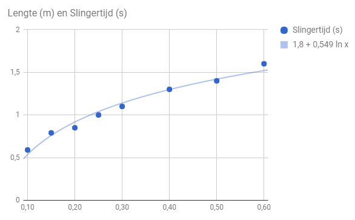

Onderzoeksvraag
Wat is het verband tussen de lengte van de slinger en de slingertijd.
Theorie en hypothese
Er is een formule bekent over dit verband,
namelijk: t = 2π√l/g waarin l de lengte van de sliner is in meter, g de zwaartekracht in m/s2 en t de tijd in seconden. Ik verwacht dat als de lengte van de slinger langer wordt dat de tijd groter wordt.
Experiment
Voor het experiment zijn de volgende materialen gebruikt:
- Een statief
- Een een klem
- Een touw
- Een gewichtje
- Een stopwatch
Er wordt een touw van .10, .15, .20, .25, .30, .40, .50 en .60 meter gebruikt. Ze worden met de klem vastgemaakt aan het statief met het gewichtje aan het andere uiteinde.
Resultaten
De volgende grafiek laat het verband tussen de lenge van het touw en de gemete slingertijd zien.
In de grafiek kan je zien dat de formule; t = 2π√l/g niet toepasbaar is in dit geval.
Conclusie en discussie
Je kunt hier niet echt iets uit opmaken, omdat het erop lijkt dat er ergens iets fout is gegaan met de meetingen en het te ver van de theorie ligt. Verbeterpunten zijn de stopwatch, je zou bijvoorbeeld een laser geactiveerde timer kunnen hebben zodat je niet met over reactietijd van de gene die aan het meten is zorgen hoeft te maken.
Bronnen
Meet resultaten (gekregen van Mr Ran)
| Lengte slinger (in m) | Slingertijd (in seconden) |
|---|---|
| .10 | 0.59 |
| .15 | 0.79 |
| .20 | 0.85 |
| .25 | 1 |
| .30 | 1.1 |
| .40 | 1.3 |
| .50 | 1.4 |
| .60 | 1.6 |
Header afbeelding
pexels.comTheorie
Youtube - For the Love of Physics (Walter Lewin's Last Lecture)